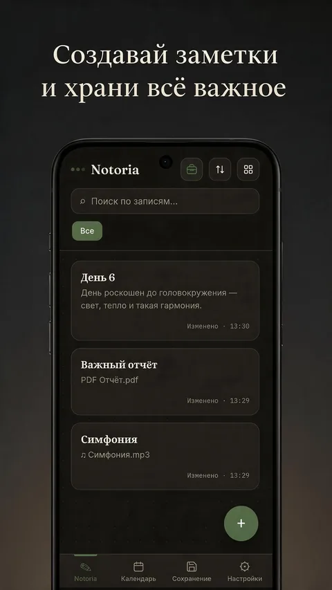
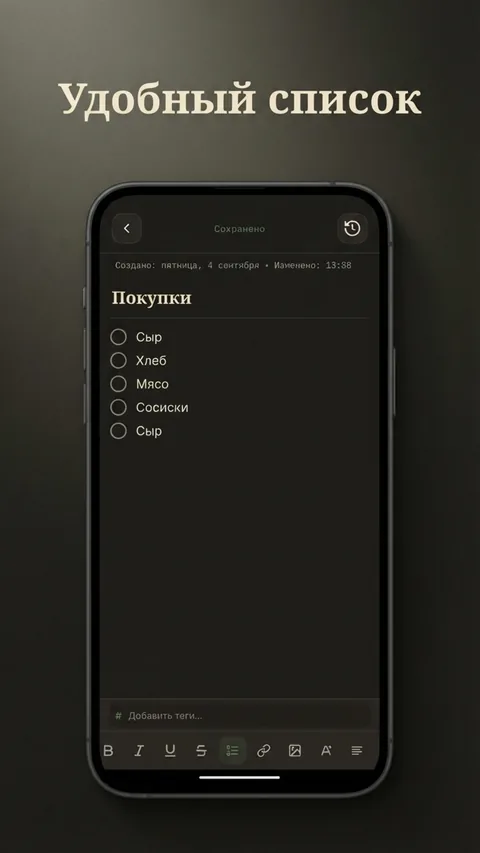
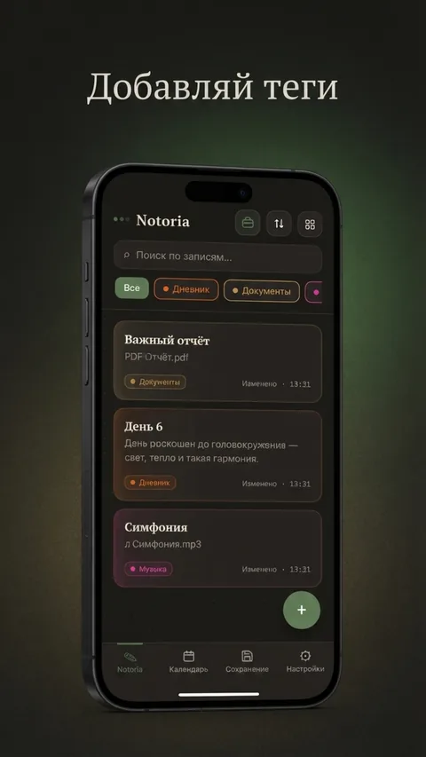
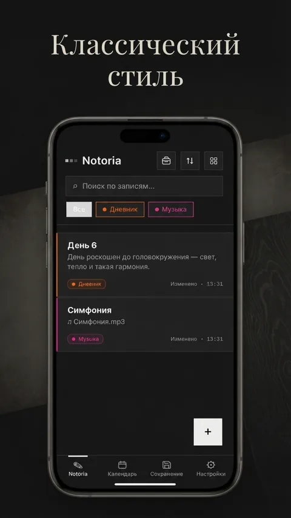
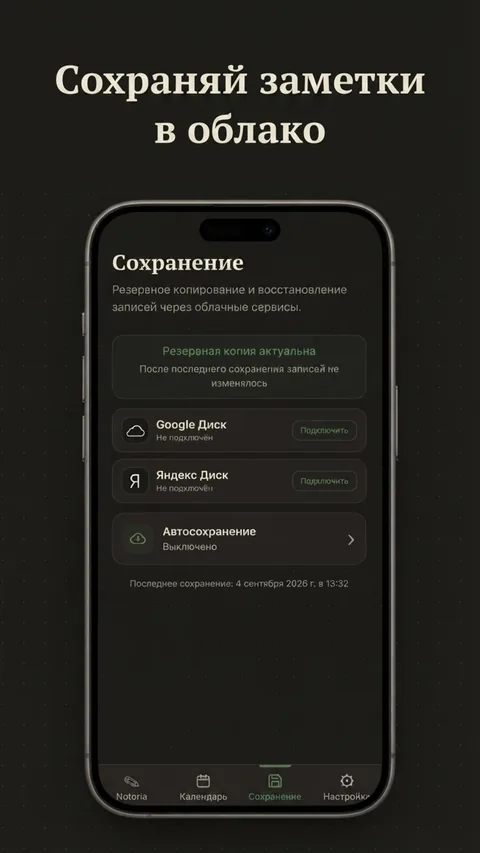
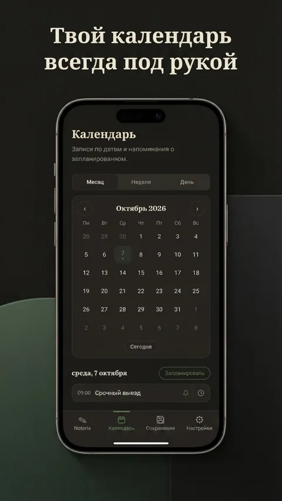
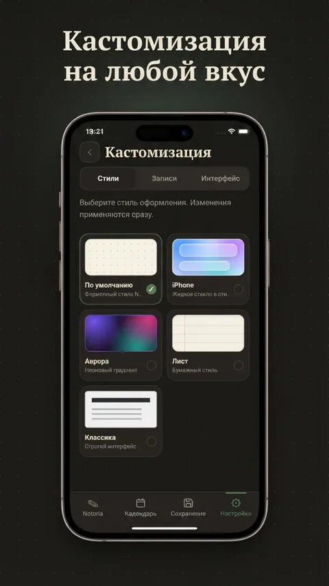
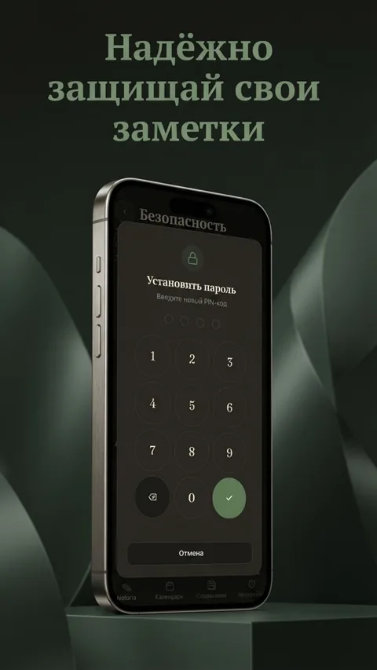
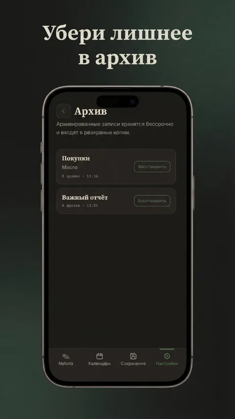

Приложение · Заметки, дневник и задачи
Личный блокнот, который остаётся личным.
Notoria — простое и быстрое приложение для заметок и личного дневника. Записывайте мысли, планы и идеи, ведите дневник, добавляйте заметки, списки дел и фото, а с помощью тегов и поиска легко находите нужную запись.
Личные заметки можно защитить PIN-кодом или графическим ключом, чтобы их не увидел никто, кроме вас. Добавьте виджет заметки на главный экран — и важная запись всегда будет перед глазами. Все данные надёжно хранятся: есть синхронизация и резервное копирование через Google Drive и Яндекс.Диск, а также архив и корзина, если запись понадобится восстановить. Приложение работает полностью офлайн, без интернета, и поддерживает тёмную тему для комфортной работы вечером.
Смотри приложение в деле

Надёжно защищай свои заметки
Классический стиль
Удобный список
Кастомизация на любой вкус
Добавляй теги
Создавай заметки и храни всё важное
Твой календарь всегда под рукой
Убери лишнее в архив
Сохраняй заметки в облакоЧто внутри
Заметки, дневник и задачи
Записывайте мысли, ведите дневник, создавайте списки дел с чекбоксами и прикрепляйте фото.
Теги и быстрый поиск
Отмечайте записи цветными тегами и находите нужную запись за секунды.
Защита блокировки
PIN-код или графический ключ — доступ к личным записям только с вашего устройства.
Календарь и напоминания
Планируйте дела по датам и получайте напоминания о запланированном.
Резервная копия в облаке
Google Drive и Яндекс.Диск — синхронизация и восстановление записей по вашему желанию.
Архив и корзина
Убирайте лишнее без потерь: запись всегда можно найти и восстановить.
Виджет на главный экран
Важная заметка всегда перед глазами, без необходимости открывать приложение.
Офлайн и тёмная тема
Работает без интернета, поддерживает тёмную тему и несколько языков интерфейса.
Коротко: без рекламы, без аналитики, без сбора данных на сторонних серверах. Подробности — в политике конфиденциальности.
Что нового
Версия 1.1.1
ТекущаяИсправлены баги и недочёты.
Версия 1.1.0
- Добавлено 3 языка интерфейса
- Добавлена вкладка «Импорт / Экспорт»
- Изменена настройка «Безопасность»
- Исправлены баги и недочёты
Версия 1.0.0
Полный релиз приложения.
Скачать Notoria
Приложение можно установить напрямую или через RuStore. Google Play — в подготовке.
Исходный код
Проект открыт на GitHub: github.com/KacBeTal/Notoa.